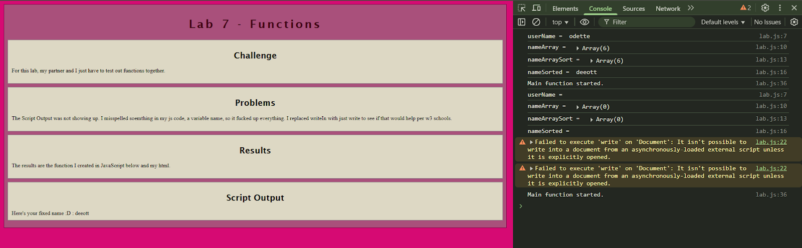
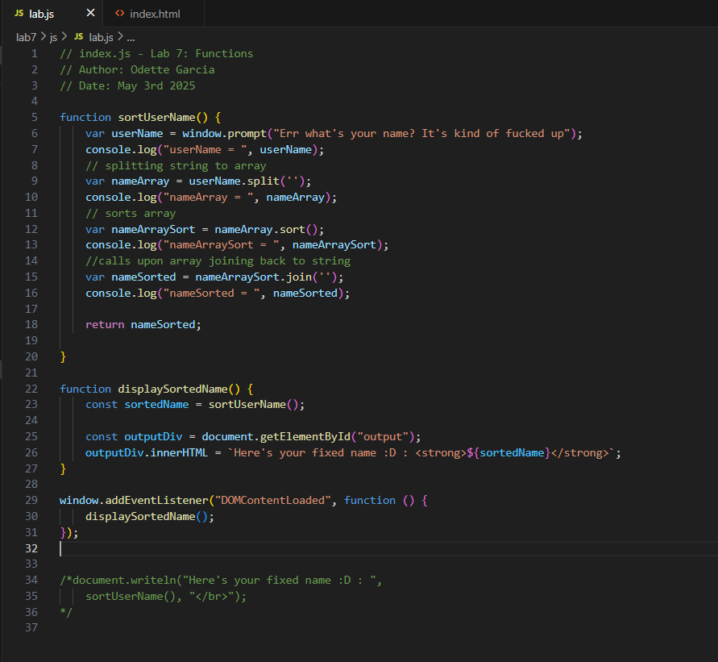
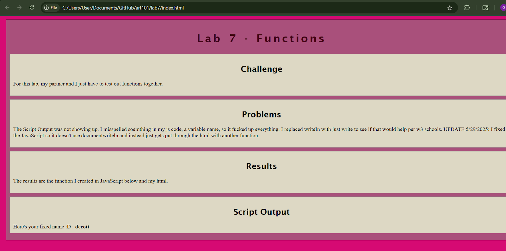

Lab 14: Debugging
Challenge
This time, I am debugging several of my previous labs using the console log.
Problems
Had to figure out what lab i was goingt o debug because most of the ones Meryl and I did are flawless.
Results
The results are below.
Debugging
I simply debugged Lab 7 as that was one of the only labs where the console log gave me a warning and I remember struggling with . I got a warning that told me "lab.js:22 Failed to execute 'write' on 'Document': It isn't possible to write into a document from an asynchronously-loaded external script unless it is explicitly opened". I ran looked at line 22 and saw it had to do with the documentwriteln portion. I looked on the WesBot and on Stack Overflow on what to do when this happens and both game me ideas on how to append my javascript properly into my HTML. I used my knowledge on adding the "output: to the HTML.
  